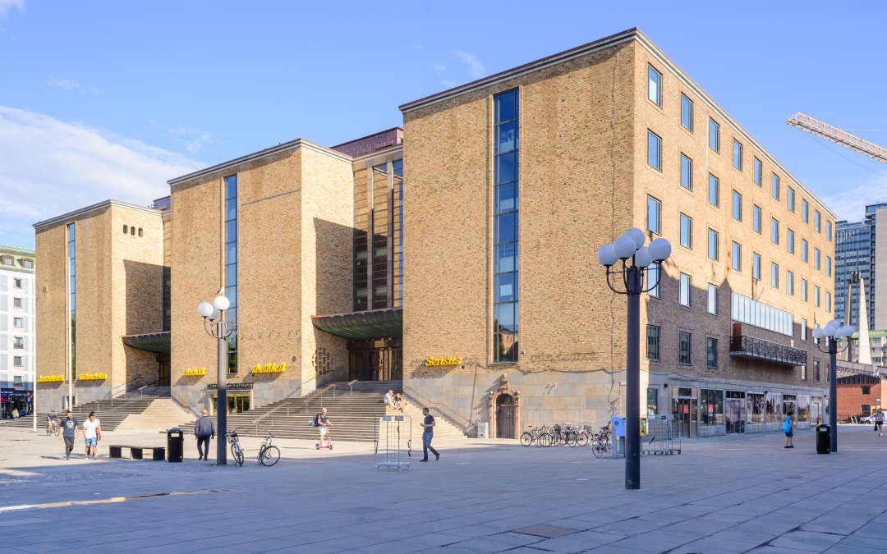

Variant 1: Interactive generative light projection installation
The first variant depends on a location allowing for an interactive component to the work. This means that
the audience must be able to come somewhat close to the projection to read instructions for how to access
the installation.
The installation will have two modes: one that displays the interaction by the visitors, another that
displays the software activity generated by it. These two modes will ideally require two separate, although
possibly overlapping, projections.
Interaction will made available through a web app in which visitors can choose among a range Nobel
laureates. Having chosen one, their face will be projected and moved around by the visitor. When choosing a
Nobel laureate, a short text that describes the discovery that earned them their
prize will be available.
The software activity that we want to display is the very software that runs the installation. To power the
interactive element we will have a web server handle communication between the visitors' smartphones and the
visual interface controlling the projections. This web server, while controlling this communication, will
produce tons of software activity: millions of events every second. We will use the most relevant subset of
this acitivty to feed a generative art algorithm, producing the laser movements that create the final light
art projection.
Location
For this variant of the installation, we think the following locations will work well:
Kulturhuset, concrete wall on the back
The back side of Kulturhuset has this wonderful industrial looking concrete wall:

The flat wall and the lack of windows makes it relatively easy to use this wall for laser projection. The
location is very central and accessible. There is ample opportunities for placing projectors.
Medborgarhuset, Medborgasplatsen

Photo: Arild Vågen
Medborgarhuset has 3 front facing wall sections, each divided into two with windows in the middle. Either
all three or the middle wall could be used. The windows would likely have to be covered to stop stray laser
beams from reaching inside.